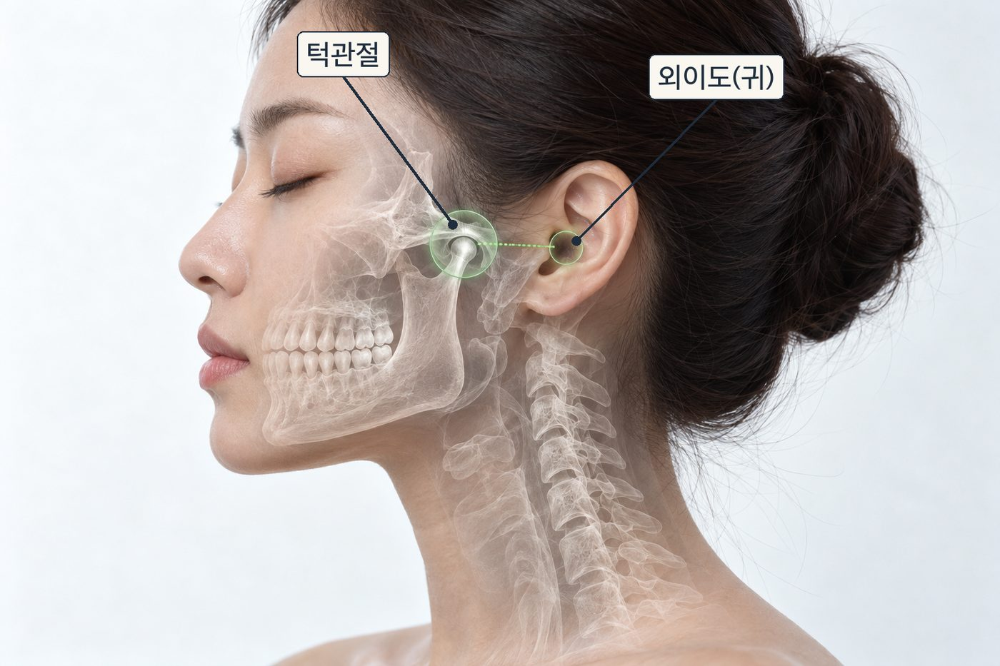

턱관절은 귀 바로 앞에 붙어 있습니다. 거리가 가까워 서로 영향을 주고받습니다.
턱관절 장애는 귀 먹먹함과 이명을 만들거나 키울 수 있습니다.
턱을 움직일 때 이명이 달라지고 턱 통증·소리가 함께 있다면, 턱관절의 영향을 확인해 볼 만합니다.
갑자기 한쪽 귀가 안 들리거나 심한 어지럼증이 있다면, 턱보다 이비인후과 진료가 먼저입니다.
턱관절은 아래턱뼈와 머리뼈가 만나는 관절로, 양쪽 귀 바로 앞에 자리합니다. 위치가 가까울 뿐 아니라 주변의 근육과 신경도 서로 얽혀 있습니다.
그래서 이를 악물거나 이갈이로 턱관절과 씹는 근육이 오래 긴장하면, 다음 증상이 함께 나타날 수 있습니다.
서울대학교병원은 턱관절 장애에서 귀 앞·귀 안쪽 통증과 함께 이명이나 어지럼증이 동반될 수 있다고 설명합니다. 미국 국립청각·의사소통장애연구소(NIDCD)도 턱관절 주변 조직이 자극되면 이명이 생기거나 심해질 수 있다고 안내합니다.
여러 개가 해당할수록 턱관절 또는 턱 주변 근육의 영향을 확인해 볼 필요가 있습니다.
특히 한쪽 귀가 갑자기 먹먹해지면서 청력이 떨어졌다면 며칠 기다리지 말고 바로 이비인후과에서 청력검사를 받아야 합니다. 돌발성 난청은 치료가 늦을수록 회복이 어려워질 수 있습니다.
귀 먹먹함과 이명이 주된 불편이라면 먼저 이비인후과에서 고막과 청력을 확인하는 것이 좋습니다.
귀에 이상이 없고 턱 통증·소리·벌림 제한 같은 턱 증상이 뚜렷하다면, 턱관절 진료가 가능한 치과에서 평가를 받습니다. 두 가지가 함께 있는 경우도 있어 필요하면 병행합니다.
귀 먹먹함이나 이명을 턱관절만의 문제로 단정하지 않습니다. 먼저 귀 질환 가능성을 확인하고, 턱관절과의 연관이 의심되면 입 벌어지는 정도, 관절 소리, 씹는 근육의 압통, 이갈이 습관을 함께 평가합니다. 치료가 필요하면 생활 습관 조절, 물리치료, 교합안정장치(스플린트)처럼 되돌릴 수 있는 방법부터 단계적으로 진행합니다.
귀 검사에서는 이상이 없다는데 먹먹함과 이명이 계속되시나요?
턱의 움직임과 근육 상태를 함께 확인해 드립니다.
이 페이지는 일반적인 건강정보이며 개인의 진단이나 치료를 대신하지 않습니다. 증상이 지속되거나 갑자기 악화되면 의료기관에서 진료를 받으시기 바랍니다.